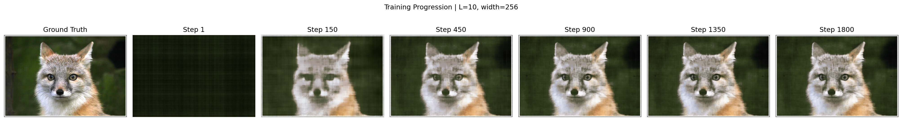
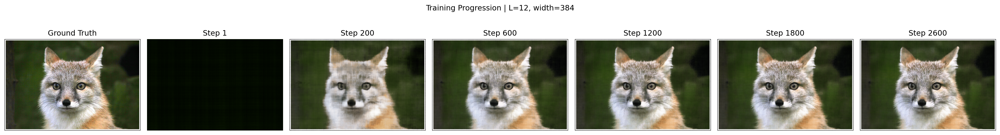
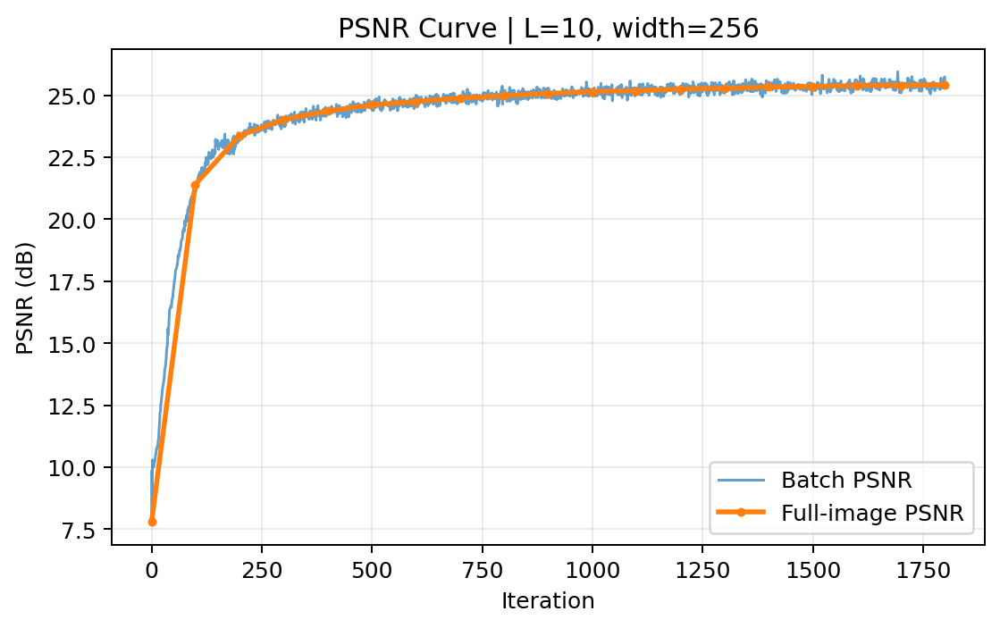
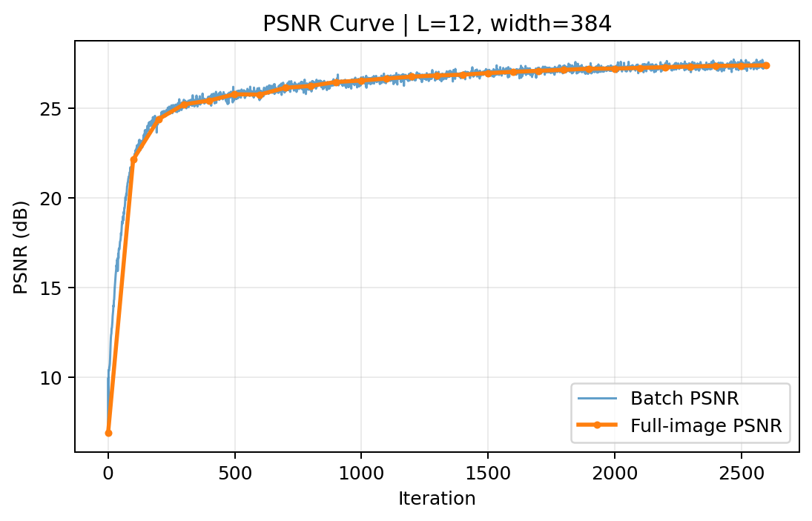
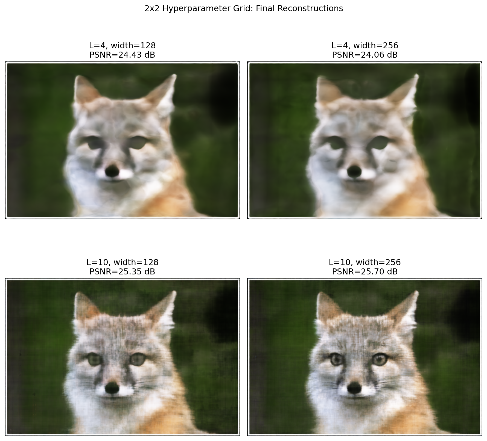
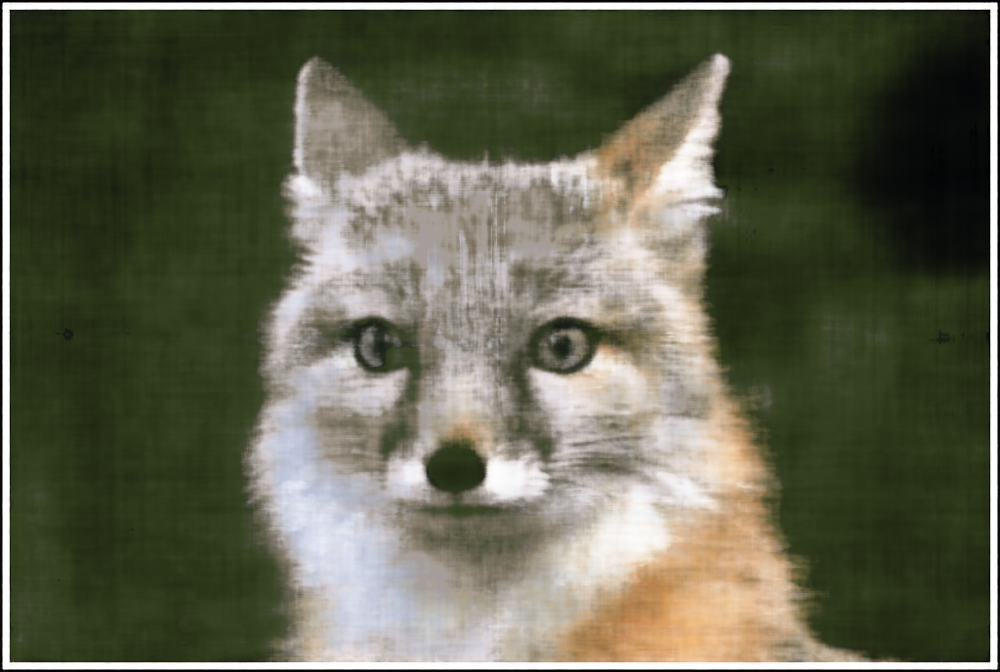
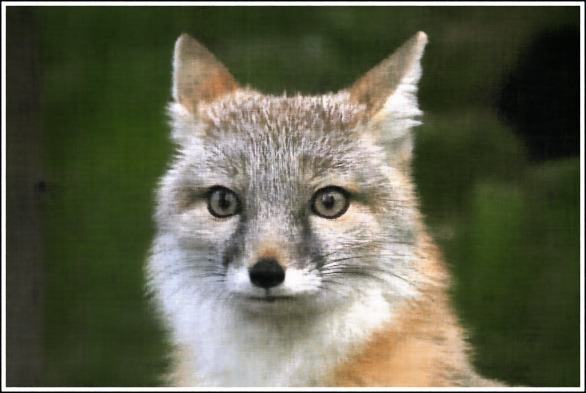

Report for fitting a coordinate-based neural field (MLP + sinusoidal positional encoding) to a 2D image. This page includes all requested deliverables: architecture summary, progression on provided image, 2x2 hyperparameter grid, and PSNR curves.
Source notebook: main.ipynb
| Parameter | Value |
|---|---|
| Positional encoding L | 10 |
| Width | 256 |
| Hidden layers | 4 |
| Learning rate | 0.01 |
| Minimum learning rate | 0.0004 |
| Steps | 1800 |
| Batch size | 8000 |
| Loss / Metric | MSE / PSNR |
| Parameter | Value |
|---|---|
| Positional encoding L | 12 |
| Width | 384 |
| Hidden layers | 5 |
| Learning rate | 0.008 |
| Minimum learning rate | 0.0002 |
| Steps | 2600 |
| Batch size | 10000 |
| Best-checkpoint restore | Enabled (best step: 2600) |





| L | Width | PSNR (dB) | MSE |
|---|---|---|---|
| 4 | 128 | 24.43 | 0.003602 |
| 4 | 256 | 24.06 | 0.003925 |
| 10 | 128 | 25.35 | 0.002920 |
| 10 | 256 | 25.70 | 0.002689 |


Metrics source: images/output/part1_neural_field/report_metrics.json